Code
import pandas as pd
import numpy as np
import seaborn as sns
import matplotlib.pyplot as plt
plt.style.use("dark_background")Danyal Malik, Murtaza Ur Rehman, Daanish Uddin Khan, Noor Ul Hassan, Raiyaan Junaid
November 25, 2023
The dataset we will be working with is a webscraped dataset from Daraz.pk, a Pakistani E-commerce website. It contains 2444 products, each with 18 features. These will be described in further detail in the rest of the article.
In this section, we will clean the dataset column by column. This will also give an overview of each column in the process. We will then describe any remaining columns at the end.
First, we extract data from the 5 separate csv files and concatenate it into one dataframe. As all the data was collected by the same process, we will clean it together and analyse each feature while doing so, in order to iteratively fix any errors we find in the dataset.
Note: We voluntarily leave some null values in during this section, as not all products had all information available, and the rows can still be useful for analysis later on even with null values (eg if we focus on two features at a time).
groceriesDF = pd.read_csv('groceries/data.csv')
healthandbeautyDF = pd.read_csv('health-and-beauty/data.csv')
homeappliancesDF = pd.read_csv('home-appliances/data.csv')
mobilesandtabletsDF = pd.read_csv('mobiles-and-tablets/data.csv')
sportsandoutdoorsDF = pd.read_csv('sports-and-outdoors/data.csv')
df = pd.concat([groceriesDF, healthandbeautyDF, homeappliancesDF, mobilesandtabletsDF, sportsandoutdoorsDF], axis=0, ignore_index=True)
df.head(5)| Name | Category | Daraz Mall | url | Original Price | Discounted Price | Rating | Reviews | Seller | Seller Rating | Ship on Time | Chat Response Time | Warranty | Return Time | Delivery Charges | Brand | Answered Questions | SFO | |
|---|---|---|---|---|---|---|---|---|---|---|---|---|---|---|---|---|---|---|
| 0 | Daal Moong/Mong - 1Kg (Premium Grains) - Zeest | Groceries, Canned, Dry & Packaged Foods, Grain... | True | https://www.daraz.pk/products/daal-moongmong-1... | 395 | 319 | 4.5 | 22 | Zeest | 92% | 100% | 88% | No warranty | No Return | Rs. 158 | Zeest | NaN | False |
| 1 | Daal Masoor/Masur - 1Kg (Premium Grains) - Zeest | Groceries, Canned, Dry & Packaged Foods, Grain... | True | https://www.daraz.pk/products/daal-masoormasur... | 479 | 399 | 4.4 | 14 | Zeest | 92% | 100% | 88% | No warranty | No Return | Rs. 158 | Zeest | NaN | False |
| 2 | Chia Seeds 500 g (Organic and Original 500 gra... | Groceries, Canned, Dry & Packaged Foods, Grain... | False | https://www.daraz.pk/products/500-500-i4317113... | 1,200 | 1,099 | 5.0 | 10 | Nuts & Snax | 89% | 100% | 100% | No warranty | No Return | Free | No Brand | NaN | False |
| 3 | Moisture Absorber Dehumidifier Desicant 200 gr... | Groceries, Laundry & Household, AirCare, Dehum... | False | https://www.daraz.pk/products/moisture-absorbe... | 1,000 | 599 | 5.0 | 2 | Super Shop.. | 92% | 100% | 98% | No warranty | No Return | Free | No Brand | NaN | False |
| 4 | Barg e Sanober Powder (50GM) | Groceries, Canned, Dry & Packaged Foods, Grain... | False | https://www.daraz.pk/products/50-i432512130-s2... | 600 | 500 | 5.0 | 1 | Super pansar store | 86% | 100% | 76% | No warranty | No Return | Rs. 119 | Generic | NaN | False |
Initially, we choose to set most of the features’ datatypes to string, as this will allow us to use string methods to process the entries. (For example, removing percentage signs so we can later convert the column to int)
df['Name'] = df['Name'].astype(str)
df['Category'] = df['Category'].astype(str)
df['url'] = df['url'].astype(str)
df['Original Price'] = df['Original Price'].astype(str)
df['Discounted Price'] = df['Discounted Price'].astype(str)
df['Reviews'] = df['Reviews'].astype(str)
df['Seller Rating'] = df['Seller Rating'].astype(str)
df['Ship on Time'] = df['Ship on Time'].astype(str)
df['Chat Response Time'] = df['Chat Response Time'].astype(str)
df['Warranty'] = df['Warranty'].astype(str)
df['Return Time'] = df['Return Time'].astype(str)
df['Delivery Charges'] = df['Delivery Charges'].astype(str)
df['Brand'] = df['Brand'].astype(str)
df['Answered Questions'] = df['Answered Questions'].astype(str)
display(df.dtypes)Name object
Category object
Daraz Mall bool
url object
Original Price object
Discounted Price object
Rating float64
Reviews object
Seller object
Seller Rating object
Ship on Time object
Chat Response Time object
Warranty object
Return Time object
Delivery Charges object
Brand object
Answered Questions object
SFO bool
dtype: objectPrice ColumnsThese columns are “Original Price” and “Discounted Price”. For each item, the original price is shown. For items with a discount, the Discounted Price is also stored, otherwise it is nan (initially).
We replace the nan values in “Discounted Price” with the corresponding Original Price
This will allow for easier processing as these values will not be ignored later on.
We then convert both “Original Price” and “Discounted Price” to int by removing the commas
df["Original Price"] = df["Original Price"].str.replace(",", "")
df["Discounted Price"] = df["Discounted Price"].str.replace(",", "")
df["Original Price"] = df["Original Price"].astype(int)
df["Discounted Price"] = df["Discounted Price"].astype(int)
print(f"\nChecking for NaN values in Discounted Price: {len(df[df['Discounted Price'] == 'nan'])}")
Checking for NaN values in Discounted Price: 0For further analysis later on, we can define another column indicating whether there was a discount on the item
Finally, we view the statistics and some sample points to ensure everything is in order
print("\nSampling 5 points from each category to see if Discount column is working correctly: ")
display(df.loc[nan_indices, ['Original Price', 'Discounted Price', "Discount"]].sample(5))
display(df.loc[~nan_indices, ['Original Price', 'Discounted Price', "Discount"]].sample(5))
print("Statistics for Price")
display(df[["Original Price", "Discounted Price"]].describe().loc[["mean", "std", "min", "max"]])
display(df[["Original Price", "Discounted Price", "Discount"]].dtypes)
Sampling 5 points from each category to see if Discount column is working correctly:
Statistics for Price| Original Price | Discounted Price | Discount | |
|---|---|---|---|
| 1318 | 1648 | 1648 | False |
| 61 | 100 | 100 | False |
| 468 | 850 | 850 | False |
| 471 | 8000 | 8000 | False |
| 474 | 429 | 429 | False |
| Original Price | Discounted Price | Discount | |
|---|---|---|---|
| 2001 | 4599 | 3314 | True |
| 1349 | 5000 | 2199 | True |
| 111 | 199 | 150 | True |
| 2246 | 1200 | 550 | True |
| 722 | 1232 | 540 | True |
| Original Price | Discounted Price | |
|---|---|---|
| mean | 1662.021277 | 1258.316285 |
| std | 4119.102631 | 3554.110706 |
| min | 35.000000 | 21.000000 |
| max | 80500.000000 | 74999.000000 |
Original Price int32
Discounted Price int32
Discount bool
dtype: objectReviews ColumnThis column represents the number of reviews for each product.
We convert the column to int
To do this, we replace “No” entries in the Reviews column with 0
Then, we analyse the statistics to verify everything is working
Seller Rating, Ship on Time and Chat Response Time ColumnsThese columns contain the percentage value for each. The first represents positive seller rating percentage, the second: the percentage of time the order ships on time, and the third: the percentage of chat responses.
We convert each of these to int, and we purposely convert the entries with not enough data to NaN, so we can discard them from our calculations later on.
df.loc[df['Seller Rating'] == 'New Seller', 'Seller Rating'] = '-1'
df.loc[df['Seller Rating'] == 'Not enough data', 'Seller Rating'] = '-1'
df['Seller Rating'] = df['Seller Rating'].str.replace('%', '')
df['Seller Rating'] = df['Seller Rating'].astype(int)
df['Seller Rating'] = df['Seller Rating'] / 100
df.loc[df['Seller Rating'] < 0, 'Seller Rating'] = pd.NAdf.loc[df['Chat Response Time'] == 'Not enough data', 'Chat Response Time'] = '-1'
df.loc[df['Chat Response Time'] == 'nan', 'Chat Response Time'] = '-1'
df['Chat Response Time'] = df['Chat Response Time'].str.replace('%', '')
df['Chat Response Time'] = df['Chat Response Time'].astype(int)
df['Chat Response Time'] = df['Chat Response Time'] / 100
df.loc[df['Chat Response Time'] < 0, 'Chat Response Time'] = pd.NAFixing the name of Chat Response Time by changing it to Chat Response Rate
Viewing statistics to ensure everything is in order
Statistics| Seller Rating | Ship on Time | Chat Response Rate | |
|---|---|---|---|
| mean | 0.828564 | 1.0 | 0.933602 |
| std | 0.111744 | 0.0 | 0.107626 |
| min | 0.330000 | 1.0 | 0.300000 |
| max | 1.000000 | 1.0 | 1.000000 |
We can see that the ship on time column has either not been scraped properly or there is some other issue, as all the values being 100% does not make any sense. So we will remove it.
Index(['Name', 'Category', 'Daraz Mall', 'url', 'Original Price',
'Discounted Price', 'Rating', 'Reviews', 'Seller', 'Seller Rating',
'Chat Response Rate', 'Warranty', 'Return Time', 'Delivery Charges',
'Brand', 'Answered Questions', 'SFO', 'Discount'],
dtype='object')Warranty ColumnThis column contains the length of the period the warranty is valid for, but we need to parse this in order to convert it to a number value.
Values in Warranty Column:
['No warranty' '1 Month Local seller warranty' '2 Months Brand Warranty'
'1 Month Seller Warranty' '7 Months Brand Warranty'
'8 Months Brand Warranty' '6 Months Seller Warranty'
'1 Month Brand Warranty' '2 Months Local seller warranty'
'Life Time Warranty Local seller warranty' '1 Month Non-local warranty'
'10 Local seller warranty' '1 Year Brand Warranty'
'1 Year Seller Warranty' '2 Years Seller Warranty'
'2 Years Brand Warranty' '9 Months Seller Warranty'
'3 Years Brand Warranty' '3 Months Brand Warranty'
'4 Months Seller Warranty' '10 Years Brand Warranty'
'3 Months Seller Warranty' '7 Months Seller Warranty' '7 Seller Warranty'
'6 Months Brand Warranty' '5 Years Seller Warranty']Converting the strings to easily interpretable strings for further processing
df.loc[df['Warranty'] == 'No warranty', 'Warranty'] = '0'
df.loc[df['Warranty'] == '1 Month Local seller warranty', 'Warranty'] = '1m'
df.loc[df['Warranty'] == '2 Months Brand Warranty', 'Warranty'] = '2m'
df.loc[df['Warranty'] == '1 Month Seller Warranty', 'Warranty'] = '1m'
df.loc[df['Warranty'] == '7 Months Brand Warranty', 'Warranty'] = '7m'
df.loc[df['Warranty'] == '8 Months Brand Warranty', 'Warranty'] = '8m'
df.loc[df['Warranty'] == '6 Months Seller Warranty', 'Warranty'] = '6m'
df.loc[df['Warranty'] == '1 Month Brand Warranty', 'Warranty'] = '1m'
df.loc[df['Warranty'] == '2 Months Local seller warranty', 'Warranty'] = '2m'
df.loc[df['Warranty'] == '1 Month Non-local warranty', 'Warranty'] = '1m'
df.loc[df['Warranty'] == '10 Local seller warranty', 'Warranty'] = '10m' # assuming 10 months
df.loc[df['Warranty'] == '1 Year Brand Warranty', 'Warranty'] = '1y'
df.loc[df['Warranty'] == '1 Year Seller Warranty', 'Warranty'] = '1y'
df.loc[df['Warranty'] == '2 Years Seller Warranty', 'Warranty'] = '2y'
df.loc[df['Warranty'] == '2 Years Brand Warranty', 'Warranty'] = '2y'
df.loc[df['Warranty'] == '9 Months Seller Warranty', 'Warranty'] = '9m'
df.loc[df['Warranty'] == '3 Years Brand Warranty', 'Warranty'] = '3y'
df.loc[df['Warranty'] == '3 Months Brand Warranty', 'Warranty'] = '3m'
df.loc[df['Warranty'] == '4 Months Seller Warranty', 'Warranty'] = '4m'
df.loc[df['Warranty'] == '10 Years Brand Warranty', 'Warranty'] = '10y'
df.loc[df['Warranty'] == '3 Months Seller Warranty', 'Warranty'] = '3m'
df.loc[df['Warranty'] == '7 Months Seller Warranty', 'Warranty'] = '7m'
df.loc[df['Warranty'] == '7 Seller Warranty', 'Warranty'] = '7y' # assuming 7 years
df.loc[df['Warranty'] == '6 Months Brand Warranty', 'Warranty'] = '6m'
df.loc[df['Warranty'] == '5 Years Seller Warranty', 'Warranty'] = '5y'
df.loc[df['Warranty'] == 'Life Time Warranty Local seller warranty', 'Warranty'] = 'inf'Converting the column to int by representing them with the unit of months
Note: NaN in this column represents lifetime warranty, as we cannot include infinity in statistical analysis
warranty = pd.Series([0 for i in range(len(df))])
warranty[df["Warranty"] == 'inf'] = pd.NA
df["Warranty"] = df["Warranty"].str.replace("m", "")
rows_with_years = df["Warranty"].str.contains("y")
df["Warranty"] = df["Warranty"].str.replace("y", "")
warranty[df["Warranty"] != 'inf'] = df[df["Warranty"] != 'inf']["Warranty"].astype(int)
warranty[rows_with_years] = warranty[rows_with_years] * 12
df["Warranty"] = warranty
print("Statistics")
display(df[["Warranty"]].describe().loc[["mean", "std", "min", "max"]])Statistics| Warranty | |
|---|---|
| mean | 0.457412 |
| std | 4.619663 |
| min | 0.000000 |
| max | 120.000000 |
Return ColumnThis column, similar to Warranty, represents the return policy, along with the period allowed.
Analysing unique values in the column
Values in Return Column
['No Return']We can see that this column was also not extracted properly, as there is only one type of value. So we drop it.
Index(['Name', 'Category', 'Daraz Mall', 'url', 'Original Price',
'Discounted Price', 'Rating', 'Reviews', 'Seller', 'Seller Rating',
'Chat Response Rate', 'Warranty', 'Delivery Charges', 'Brand',
'Answered Questions', 'SFO', 'Discount'],
dtype='object')Delivery Charges and Answered Questions ColumnThese columns contains the additional charges for delivery of the product, and the number of customer questions answered by the seller under the product.
Convert the columns to int
df.loc[df['Delivery Charges'] == 'Free', 'Delivery Charges'] = '0'
df.loc[df['Delivery Charges'] == 'nan', 'Delivery Charges'] = '-1'
df['Delivery Charges'] = df['Delivery Charges'].str.replace('Rs. ', '')
df['Delivery Charges'] = df['Delivery Charges'].astype(int)
df.loc[df['Delivery Charges'] < 0, 'Delivery Charges'] = pd.NA
df.loc[df['Answered Questions'] == 'nan', 'Answered Questions'] = '0'
df['Answered Questions'] = df['Answered Questions'].astype(float)
df['Answered Questions'] = df['Answered Questions'].astype(int)Checking statistics
Removing SFO Column
The column represents whether the product is shipped from overseas. But, all the entries are false, so there was some issue when collecting the data. Hence, we remove this column too.
Index(['Name', 'Category', 'Daraz Mall', 'url', 'Original Price',
'Discounted Price', 'Rating', 'Reviews', 'Seller', 'Seller Rating',
'Chat Response Rate', 'Warranty', 'Delivery Charges', 'Brand',
'Answered Questions', 'Discount'],
dtype='object')Fixing Category Formatting
This column represents the category along with all the subcategories of the product
Before
Daal Moong/Mong - 1Kg (Premium Grains) - Zeest
Groceries, Canned, Dry & Packaged Foods, Grains, Beans & Pulses, Lentils, Daal Moong/Mong - 1Kg (Premium Grains) - Zeest
After
Daal Moong/Mong - 1Kg (Premium Grains) - Zeest
Groceries, Canned, Dry & Packaged Foods, Grains, Beans & Pulses, Lentils| Name | Category | Daraz Mall | url | Original Price | Discounted Price | Rating | Reviews | Seller | Seller Rating | Chat Response Rate | Warranty | Delivery Charges | Brand | Answered Questions | Discount | |
|---|---|---|---|---|---|---|---|---|---|---|---|---|---|---|---|---|
| count | 2444 | 2444 | 2444 | 2444 | 2444.000000 | 2444.000000 | 2444.000000 | 2444.000000 | 2444 | 2096.000000 | 2285.000000 | 2442.000000 | 2260.000000 | 2444 | 2444.000000 | 2444 |
| unique | 1850 | 208 | 2 | 2444 | NaN | NaN | NaN | NaN | 1229 | NaN | NaN | NaN | NaN | 253 | NaN | 2 |
| top | Large Capacity Makeup Pouch Multi function Pur... | Mobiles & Tablets, Mobile Accessories, Screen ... | False | https://www.daraz.pk/products/daal-moongmong-1... | NaN | NaN | NaN | NaN | HEALTHEE U | NaN | NaN | NaN | NaN | No Brand | NaN | True |
| freq | 8 | 239 | 2121 | 1 | NaN | NaN | NaN | NaN | 44 | NaN | NaN | NaN | NaN | 1802 | NaN | 1868 |
| mean | NaN | NaN | NaN | NaN | 1662.021277 | 1258.316285 | 3.362889 | 83.092062 | NaN | 0.828564 | 0.933602 | 0.457412 | 57.366372 | NaN | 19.241408 | NaN |
| std | NaN | NaN | NaN | NaN | 4119.102631 | 3554.110706 | 2.015331 | 331.860118 | NaN | 0.111744 | 0.107626 | 4.619663 | 73.949502 | NaN | 72.164159 | NaN |
| min | NaN | NaN | NaN | NaN | 35.000000 | 21.000000 | 0.000000 | 0.000000 | NaN | 0.330000 | 0.300000 | 0.000000 | 0.000000 | NaN | 0.000000 | NaN |
| 25% | NaN | NaN | NaN | NaN | 399.000000 | 260.750000 | 0.000000 | 0.000000 | NaN | 0.800000 | 0.910000 | 0.000000 | 0.000000 | NaN | 0.000000 | NaN |
| 50% | NaN | NaN | NaN | NaN | 700.000000 | 499.000000 | 4.500000 | 9.000000 | NaN | 0.850000 | 0.980000 | 0.000000 | 0.000000 | NaN | 1.000000 | NaN |
| 75% | NaN | NaN | NaN | NaN | 1499.000000 | 1000.000000 | 4.800000 | 58.000000 | NaN | 0.890000 | 1.000000 | 0.000000 | 119.000000 | NaN | 13.000000 | NaN |
| max | NaN | NaN | NaN | NaN | 80500.000000 | 74999.000000 | 5.000000 | 11505.000000 | NaN | 1.000000 | 1.000000 | 120.000000 | 879.000000 | NaN | 1855.000000 | NaN |
Remaining Columns Described
Name object
Category object
Daraz Mall bool
url object
Original Price int32
Discounted Price int32
Rating float64
Reviews int32
Seller object
Seller Rating float64
Chat Response Rate float64
Warranty float64
Delivery Charges float64
Brand object
Answered Questions int32
Discount bool
dtype: objectDaraz Mall: Boolean dtype; Indicates whether the item is on Daraz Mall.
url: String dtype; unique url for each product
Rating: Float dtype; 0 to 5 star average product rating
Seller: String dtype; the name of the seller
Brand: String dtype; the name of the brand
Finally, we save the processed dataset
# Displaying The Plots
def price_histograms(data, threshold, flag, col):
price = data[col]
title = ""
plotting = None
if flag == 1:
plotting = price[price < threshold]
if col == "Discounted Price":
title = "Distribution of Discounted Prices Less Than Rs 5000"
else:
title = "Distribution of Product Prices Less Than Rs 5000"
elif flag == 0:
plotting = price[price >= threshold]
if col == "Discounted Price":
title = "Distribution of Discounted Prices Greater Than Rs 5000"
else:
title = "Distribution of Product Prices Greater Than Rs 5000"
# plt.hist(original_price_half1, bins=30)
plt.hist(plotting, bins=30, edgecolor='black')
plt.ylabel("Frequency of Price")
plt.xlabel("Price (Rs)")
plt.title(title)
plt.tight_layout()
def histograms(plotting, col):
plt.hist(plotting, bins=30, edgecolor='black')
plt.ylabel(f"Frequency of {col}")
plt.xlabel(col)
plt.title(f"Distribution of {col}")
plt.tight_layout()
def boxplot(plotting, col):
plt.boxplot(plotting)
plt.title(f"Boxplot of {col}")
def kde(plotting, col):
sns.kdeplot(plotting, fill=True)
plt.title(f"KDE of {col}")Each numerical column is visualised using histograms, box plots and Kernel Density Estimation plots.
For the column, ‘Original Price’, the values have been split and visualised using two separate plots for each, to account for the fact that the bulk of the data lies towards the lower values but there are some outliers towards the extreme end.
These plots visualise the Original Price values less than the defined threshold (5000)
# Splitting Original Price on Threshold 5000 to better display distributions
# Histogram
plt.figure(figsize=(12, 8))
plt.subplot(221)
price_histograms(data, 5000, 1, "Original Price")
price = data['Original Price']
plotting = price[price < 5000]
# Boxplot
plt.subplot(222)
boxplot(plotting, "Original Price")
plt.title("Boxplot of Original Prices Less than 5000")
# Null Check
null = plotting.isnull()
if null.any():
print("Null values present in column")
# KDE
plt.subplot(212)
kde(plotting, "Original Prices Less than 5000")
# Ensuring No Overlap
plt.tight_layout()
plt.show()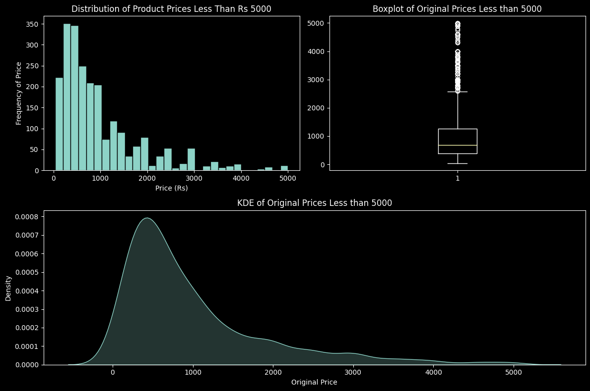
These plots visualise the Original Price values greater than or equal to the defined threshold (5000)
# Plotting Histogram
plt.figure(figsize=(12, 8))
plt.subplot(221)
price_histograms(data, 5000, 0, "Original Price")
# Plotting Box Plots
plt.subplot(222)
plotting = price[price >= 5000]
boxplot(plotting, "Original Price")
plt.title("Boxplot of Original Prices Greater than 5000")
# Null Check
null = plotting.isnull()
if null.any():
print("Null values present in column")
# Plotting KDE
plt.subplot(212)
kde(plotting, "Original Prices Greater than 5000")
# Ensuring No Overlap In Graphs
plt.tight_layout()
plt.show()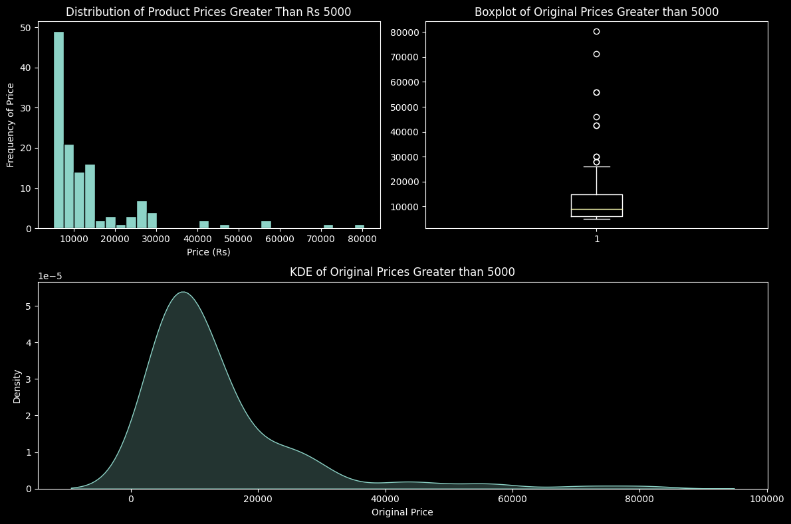
These plots visualise the Discounted Price values less than the defined threshold (5000)
# Splitting Discounted Price on Threshold 5000 to better display distribution
# Plotting Histograms
plt.figure(figsize=(12, 8))
plt.subplot(221)
price_histograms(data, 5000, 1, "Discounted Price")
# Plotting Boxplots
plt.subplot(222)
plotting = price[price < 5000]
boxplot(plotting, "Discounted Price")
plt.title("Boxplot of Discounted Prices Less than 5000")
# Null Check
null = plotting.isnull()
if null.any():
print("Null values present in column")
# Plotting KDE
plt.subplot(212)
kde(plotting, "Discounted Prices Less than 5000")
# Ensuring No Overlaps in Graphs
plt.tight_layout()
plt.show()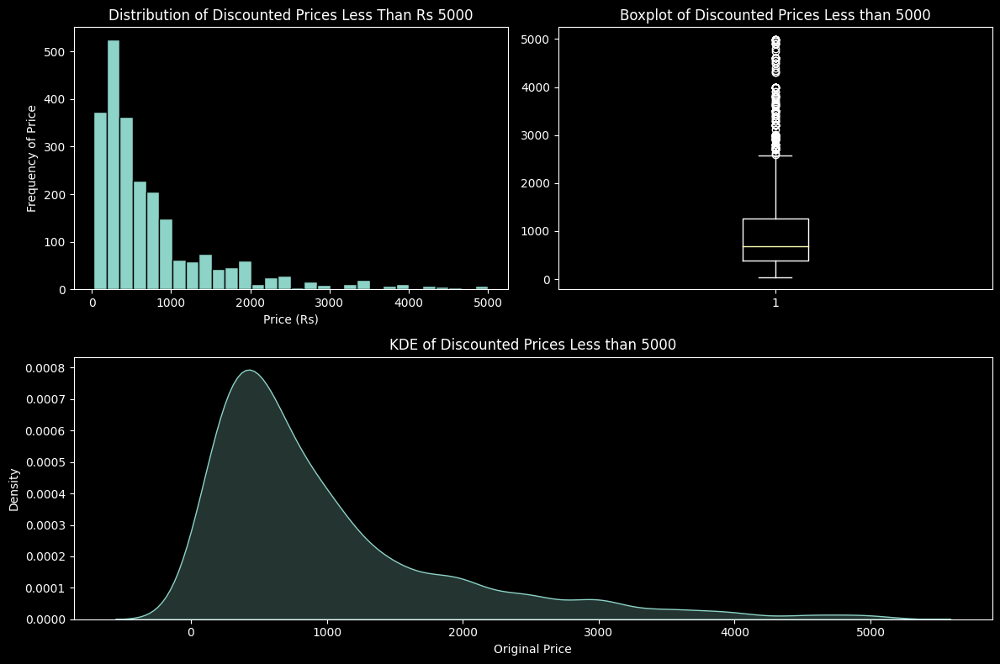
These plots visualise the Original Price values greater than or equal to the defined threshold (5000)
# Plotting Histogram
plt.figure(figsize=(12, 8))
plt.subplot(221)
price_histograms(data, 5000, 0, "Discounted Price")
# Plotting Boxplot
plt.subplot(222)
plotting = price[price >= 5000]
boxplot(plotting, "Discounted Price")
plt.title("Boxplot of Discounted Prices Greater than 5000")
# KDE
plt.subplot(212)
kde(plotting, "Discounted Prices Greater than 5000")
# Null Check
null = plotting.isnull()
if null.any():
print("Null values present in column")
# Ensuring No Overlap
plt.tight_layout()
plt.show()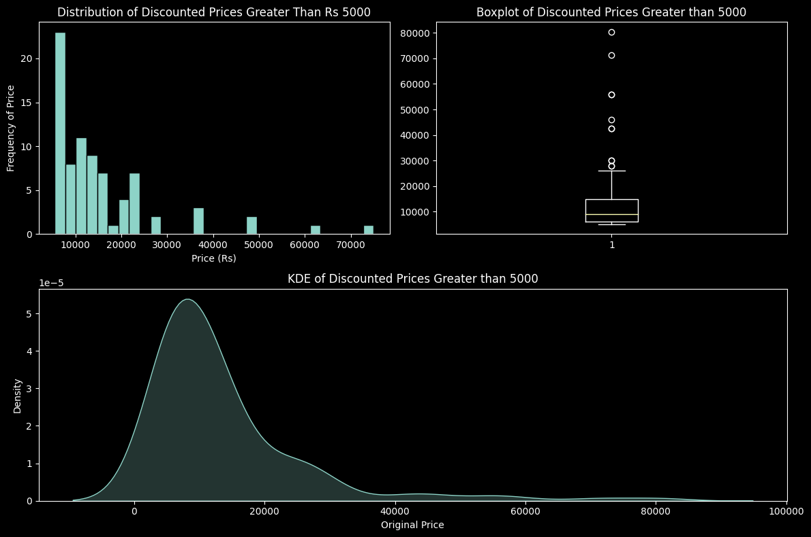
These plots visualise the Difference between the Original Prices and discounted prices, giving us the distribution of the discounts given on each product
# Plotting The Distribution of Max Discounts
discounts = data["Original Price"] - data["Discounted Price"]
# Histogram
plt.figure(figsize=(12, 8))
plt.subplot(221)
plt.hist(discounts, bins=30, edgecolor='black')
plt.ylabel("Frequency of Discount")
plt.xlabel("Discount Given (Rs)")
plt.title("Distribution of Discounts")
# Boxplot
plt.subplot(222)
boxplot(discounts, "Distribution of Discounts")
# Null Check
null = discounts.isnull()
if null.any():
print("Null values present in column")
# KDE
plt.subplot(212)
kde(discounts, "Distribution of Discounts")
# Ensuring No Overlap
plt.tight_layout()
plt.show()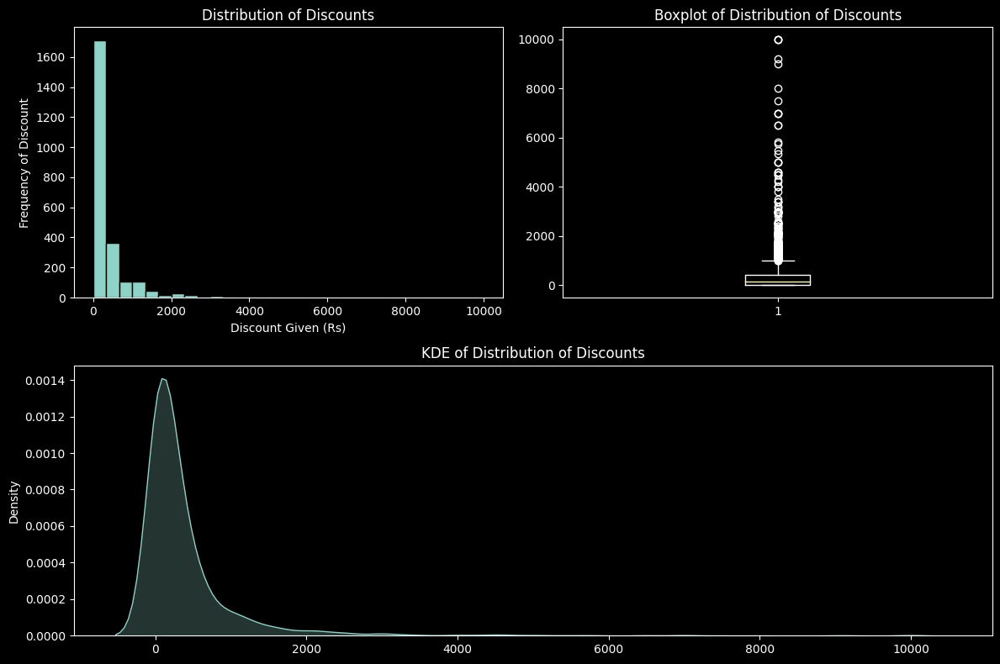
Visualisation of the distribution of rating shows that most of our ratings lie on extreme ends, a rating of zero or five. Further reinforced by the KDE shown below.
# Histogram
plt.figure(figsize=(12, 8))
plt.subplot(221)
data_plot = data["Rating"]
histograms(data_plot, "Rating")
# Boxplot
plt.subplot(222)
boxplot(data_plot, "Rating")
# Null Check
null = data_plot.isnull()
if null.any():
print("Null values present in column")
# KDE
plt.subplot(212)
kde(data_plot, "Rating")
# Ensuring No Overlap
plt.tight_layout()
plt.show()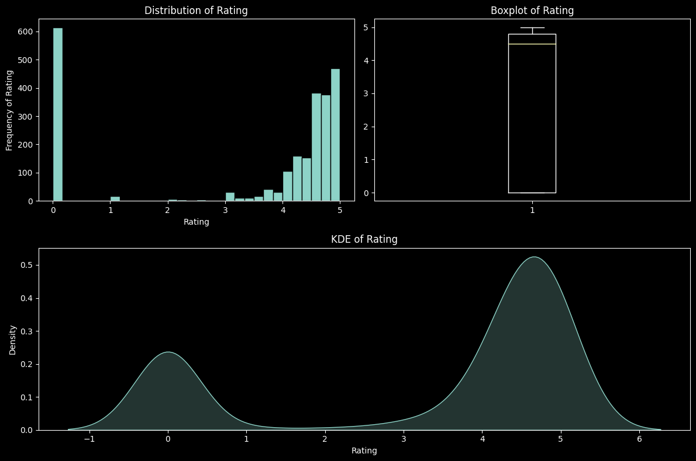
Number of Reviews lie mostly towards the lower extreme end with some outliers towards the highest extreme. So to be able to visualise the data better, it has been split on the threshold of 500.
The following plots display the visualisation of Number of Reviews which fall in the threshold below 500.
# reviews
# Histogram
plt.figure(figsize=(12, 8))
plt.subplot(221)
rev = data["Reviews"]
less = rev[rev < 500]
histograms(less, "Reviews")
plt.title("Distibution Of Reviews less than 500")
# Boxplot
plt.subplot(222)
boxplot(less, "Distibution Of Reviews less than 500")
# Null Check
null = less.isnull()
if null.any():
print("Null values present in column")
# KDE
plt.subplot(212)
kde(less, "Distribution of Reviews less than 500")
# Ensuring No Overlap
plt.tight_layout()
plt.show()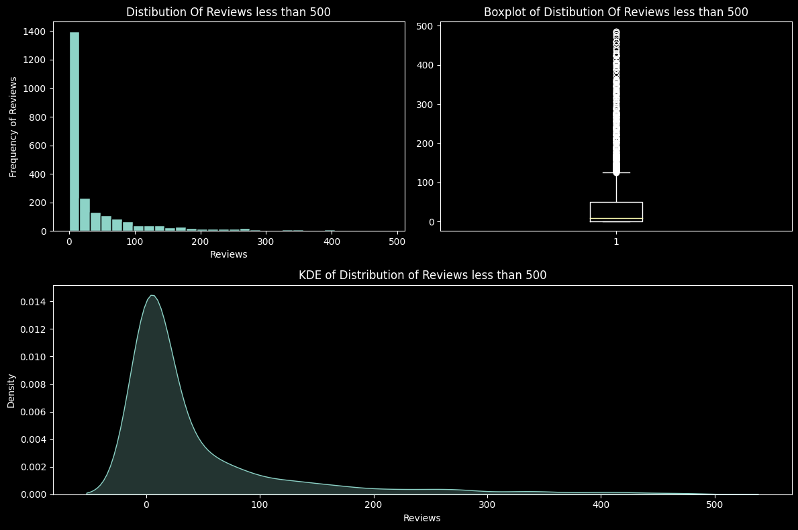
The following plots display the visualisation of Number of Reviews which fall in the threshold above and equal to 500.
# Histogram
plt.figure(figsize=(12, 8))
plt.subplot(221)
rev = data["Reviews"]
more = rev[rev >= 500]
histograms(more, "Reviews")
plt.title("Distibution Of Reviews Greater than 500")
# Boxplot
plt.subplot(222)
boxplot(more, "Distibution Of Reviews Greater than 500")
# Null Check
null = more.isnull()
if null.any():
print("Null values present in column")
# KDE
plt.subplot(212)
kde(more, "Distribution of Reviews Greater than 500")
# Ensuring No Overlap
plt.tight_layout()
plt.show()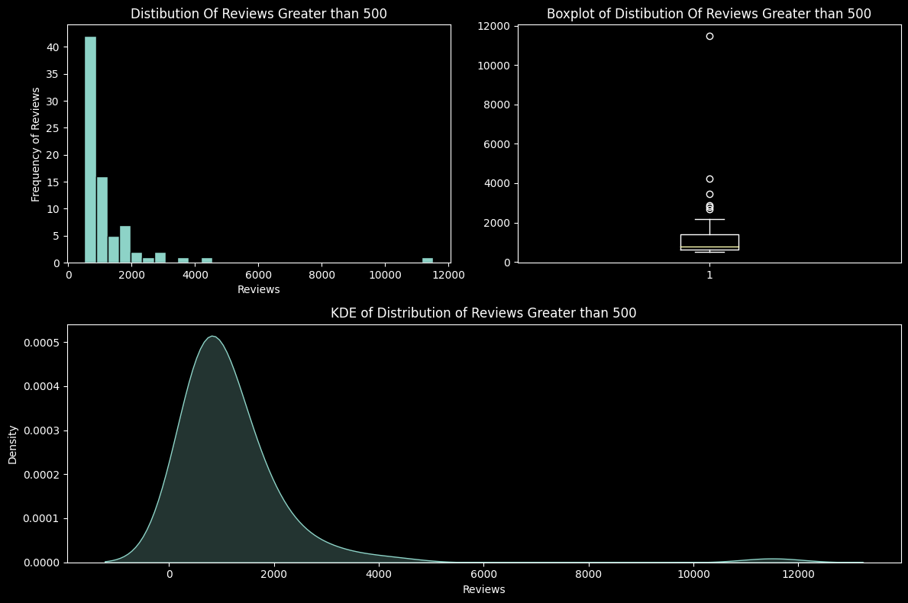
Visualisation of the Seller Rating shows that most sellers have a high rating as the bulk of the data is above 0.8.
# Histogram
plt.figure(figsize=(12, 8))
plt.subplot(221)
sell = data["Seller Rating"]
histograms(sell, "Seller Rating")
null = sell.isnull()
# Null Check
if null.any():
sell.dropna(inplace=True)
# Box plot
plt.subplot(222)
boxplot(sell, "Seller Rating")
# KDE
plt.subplot(212)
kde(sell, "Seller Rating")
# Ensuring No Overlap
plt.tight_layout()
plt.show()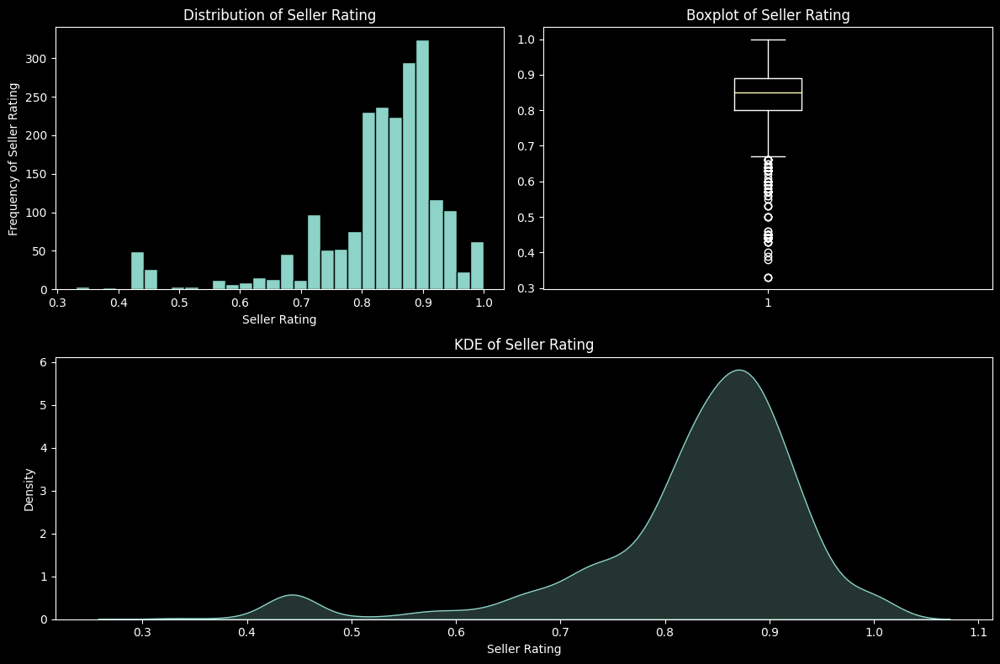
Chat Response Rate also lies towards the higher end of its range
# Histogram
plt.figure(figsize=(12, 8))
plt.subplot(221)
sell = data["Chat Response Rate"]
histograms(sell, "Chat Response Rate")
# Null Check
if null.any():
sell.dropna(inplace=True)
# Boxplot
plt.subplot(222)
boxplot(sell, "Chat Response Rate")
# KDE
plt.subplot(212)
kde(sell, "Chat Response Rate")
# Ensuring No Overlap
plt.tight_layout()
plt.show()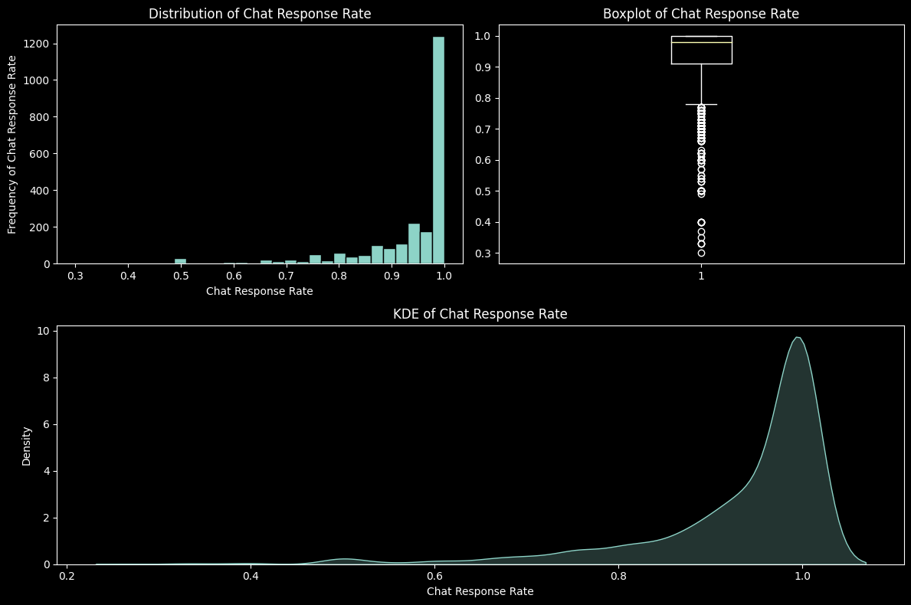
Most of the warranty values were 0 as most of the products did not have warranties, and a few products which were outliers had warranty. The warranty is in months in the data. To display the data better in the graphs the warranty frequency values were log scaled.
# Log Scale
# Histogram
plt.figure(figsize=(12, 8))
plt.subplot(221)
sell = data["Warranty"]
plt.yscale('log')
histograms(sell, "Warranty")
plt.ylabel("Frequency of Warranty (Log Scaled)")
# Null Check
if null.any():
sell.dropna(inplace=True)
# Boxplot
plt.subplot(222)
boxplot(sell, "Warranty")
# KDE
plt.subplot(212)
kde(sell, "Warranty")
# Ensuring No Overlap
plt.tight_layout()
plt.show()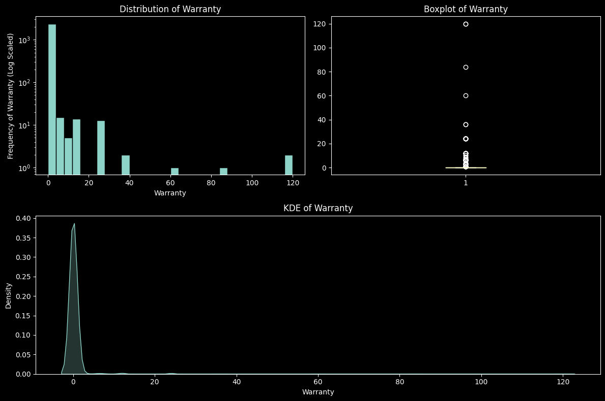
Most sellers did not take delivery charges and the ones who did not charge high amounts.
# Histogram
plt.figure(figsize=(12, 8))
plt.subplot(221)
sell = data["Delivery Charges"]
histograms(sell, "Delivery Charges")
# Null Check
if null.any():
sell.dropna(inplace=True)
# Boxplot
plt.subplot(222)
boxplot(sell, "Warranty")
# KDE
plt.subplot(212)
kde(sell, "Delivery Charges")
# Ensuring No Overlap
plt.tight_layout()
plt.show()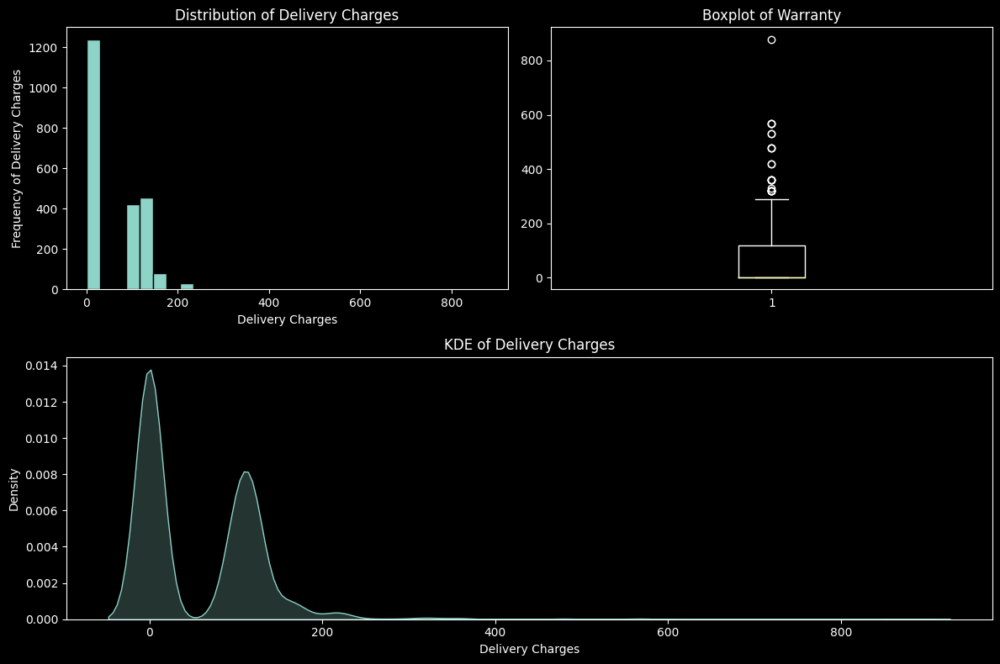
90% of the questions were left unanswered by the sellers as can be visualised below
While the bulk of the data is towards the left extreme of the data, their are still values that lie at the other extreme, so again we have split the visualisation into two parts where the first part displays the Answered questions less than a defined threshold, which is 200.
# Histograms
plt.figure(figsize=(12, 8))
plt.subplot(221)
sell = data["Answered Questions"]
sell_less = sell[sell < 200]
histograms(sell_less, "Answered Questions less than 200")
# Boxplot
plt.subplot(222)
boxplot(sell_less, "Answered Questions less than 200")
# Null Check
null = sell.isnull()
if null.any():
print("Null values present in column")
# KDE
plt.subplot(212)
kde(sell_less, "Answered Questions less than 200")
# Enssuring No Overlap
plt.tight_layout()
plt.show()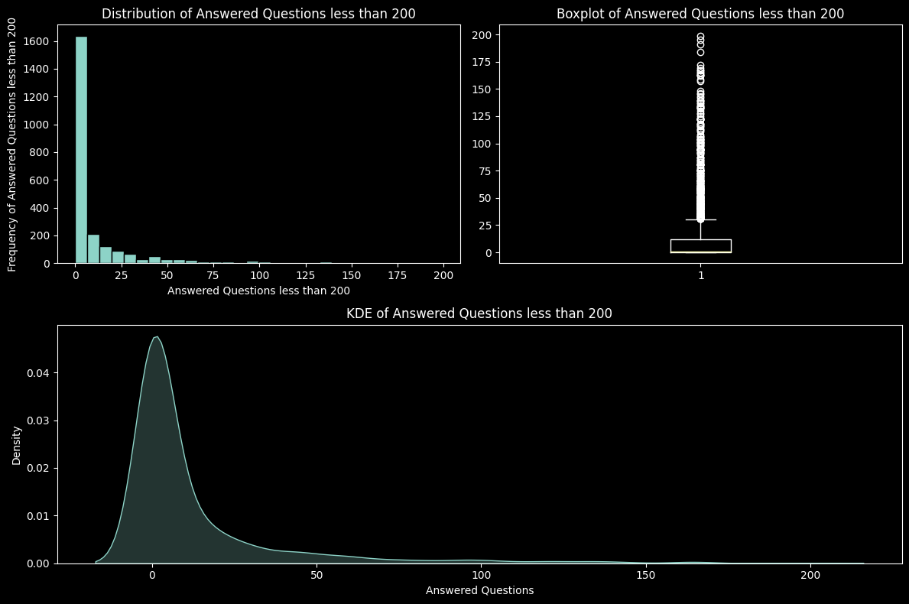
The second part displays the Answered Questions that are greater than a defined threshold, which is 200.
# Histograms
plt.figure(figsize=(12, 8))
plt.subplot(221)
sell = data["Answered Questions"]
sell_more = sell[sell >= 200]
histograms(sell_more, "Answered Questions Greater than 200")
# Boxplot
plt.subplot(222)
boxplot(sell_more, "Answered Questions Greater than 200")
# KDE
plt.subplot(212)
kde(sell_more, "Answered Questions Greater than 200")
# Ensuring No Overlap
plt.tight_layout()
plt.show()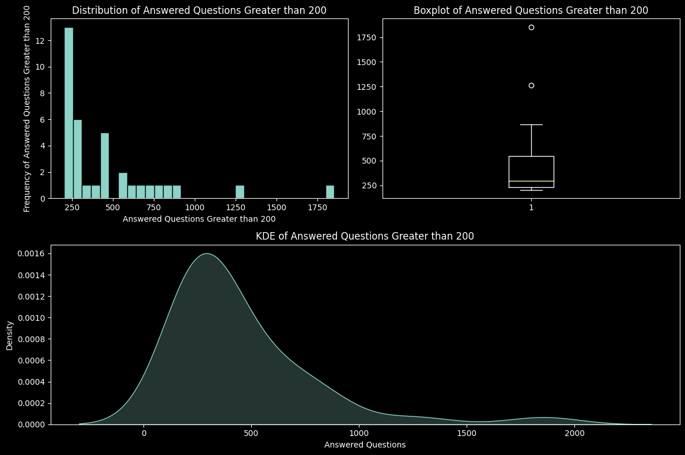
We show the proportion of all subcategories in each category in the following section.
df['Main Category'] = df['Category'].apply(lambda x: x.split(',')[0].strip())
df['Subcategory'] = df['Category'].apply(lambda x: x.split(',')[1].strip())
grouped = df.groupby(['Main Category', 'Subcategory']).size().reset_index(name='Count')
main_categories = grouped['Main Category'].unique()
for category in main_categories:
sub_data = grouped[grouped['Main Category'] == category]
plt.figure(figsize=(4, 4))
wedges, texts, autotexts = plt.pie(sub_data['Count'], labels=None, autopct='%1.1f%%', startangle=140)
plt.title(f"Subcategories for {category}", pad=20)
plt.axis('equal')
plt.legend(sub_data['Subcategory'], loc='center left', bbox_to_anchor=(1, 0.5), title='Subcategories')
plt.show()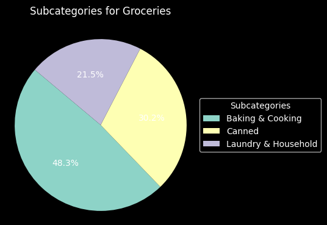
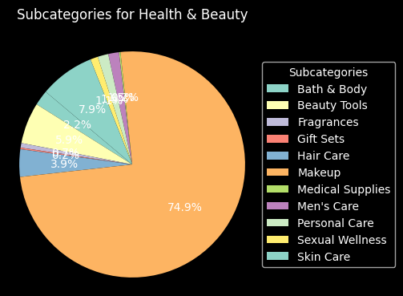
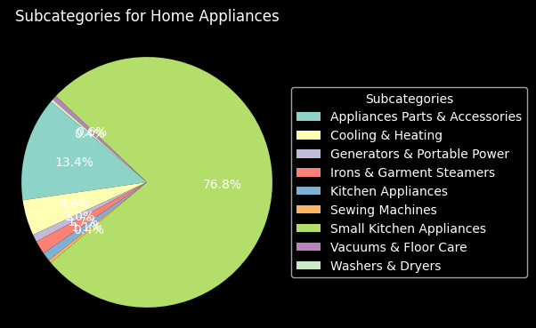
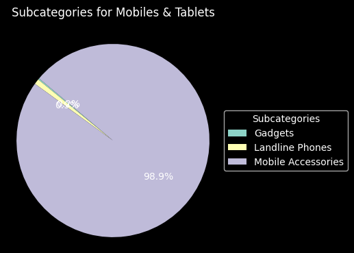
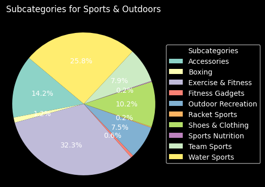
As we can see, all the column distributions seem to make sense, so we need not make any further changes to them. Our plots helped us understand theses distributions better, as described above, and also helped us ensure there are no big issues with the values.
We visualise relationships between columns by using scatterplots for each pair
numerical_vars = ['Original Price', 'Discounted Price', 'Rating', 'Reviews',
'Seller Rating', 'Chat Response Rate', 'Warranty',
'Delivery Charges', 'Answered Questions']
# Select the numerical data
numerical_data = data[numerical_vars]
# Create the pair plot
plt.figure(figsize=(12, 12))
sns.pairplot(numerical_data)
plt.suptitle('Pair Plot of All Selected Numerical Variables', y=1.02) # Adjust title position
plt.show()<Figure size 1200x1200 with 0 Axes>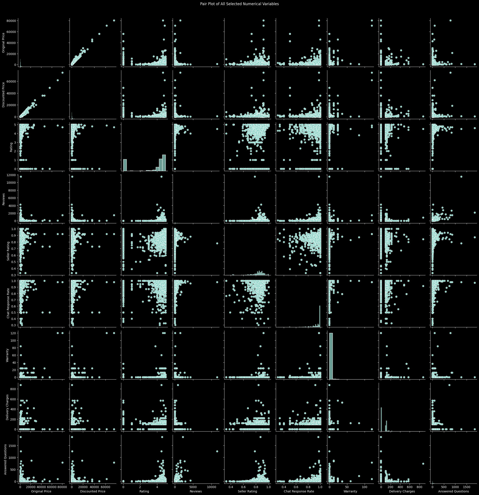
To get a better understanding of the relationships, we can make a heatmap of the correlation.
numerical_data = data[numerical_vars]
# Calculate the correlation matrix
corr_matrix = numerical_data.corr()
# Create a heatmap to visualize the correlation matrix
plt.figure(figsize=(10, 8))
sns.heatmap(corr_matrix, annot=True, fmt=".2f", cmap='coolwarm')
plt.title('Heatmap of Correlation Matrix')
plt.show()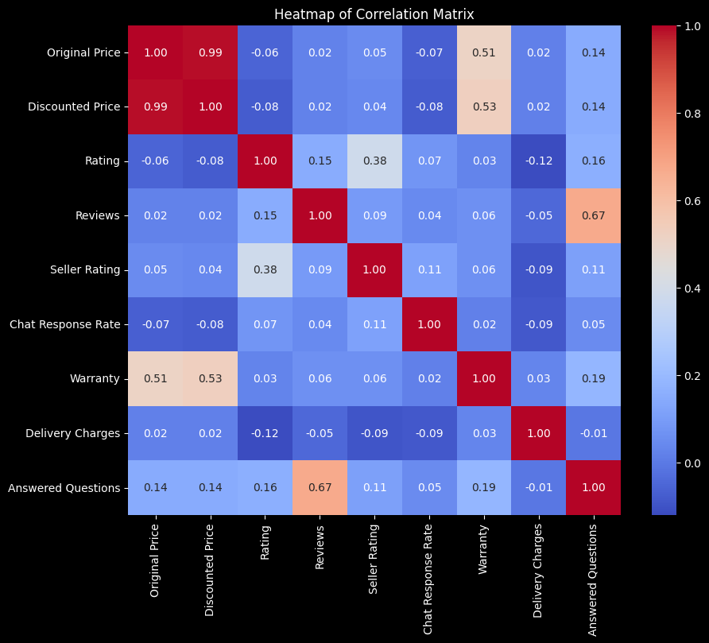
We can see that the high correlations all seem to make sense, such as original price and discounted price. These two will obviously scale very closely together, especially considering they are more often that not, the same.
Visualising how two variables are related to another variable with a 3D Scatter Plot
# 3D Scatter Plot
fig = plt.figure(figsize=(10, 8))
ax = fig.add_subplot(111, projection='3d')
ax.scatter(df['Seller Rating'], df['Chat Response Rate'], df['Rating'])
ax.set_xlabel('Seller Rating')
ax.set_ylabel('Chat Response Rate')
ax.set_zlabel('Product Rating')
ax.zaxis.labelpad=-3
plt.title('3D Scatter Plot')
plt.show()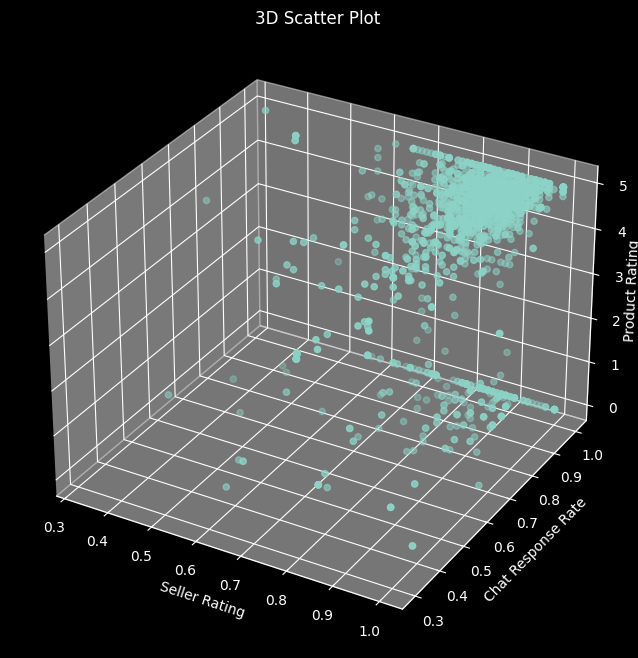
Next, we look at some bubble plots.
size_var = 'Reviews'
# Create the bubble chart
plt.figure(figsize=(10, 6))
sns.scatterplot(data=data, x='Rating', y='Reviews', size='Seller Rating', legend=False, sizes=(20, 200))
plt.title('Bubble Chart: Rating vs Reviews (Bubble Size: Seller Rating)')
plt.xlabel('Rating')
plt.ylabel('Reviews')
plt.show()
plt.figure(figsize=(10, 6))
sns.scatterplot(data=data, x='Chat Response Rate', y='Seller Rating', size='Reviews', legend=False, sizes=(20, 200))
plt.title('Bubble Chart: Chat Response Rate vs Seller Rating (Bubble Size: Reviews)')
plt.xlabel('Chat Response Time')
plt.ylabel('Seller Rating')
plt.show()
plt.figure(figsize=(10, 6))
sns.scatterplot(data=data, x='Delivery Charges', y='Original Price', size='Discounted Price', legend=False, sizes=(20, 200))
plt.title('Bubble Chart: Delivery Charges vs Original Price (Bubble Size: Discounted Price)')
plt.xlabel('Delivery Charges')
plt.ylabel('Original Price')
plt.show()
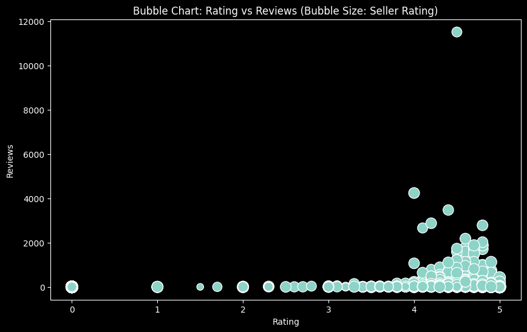
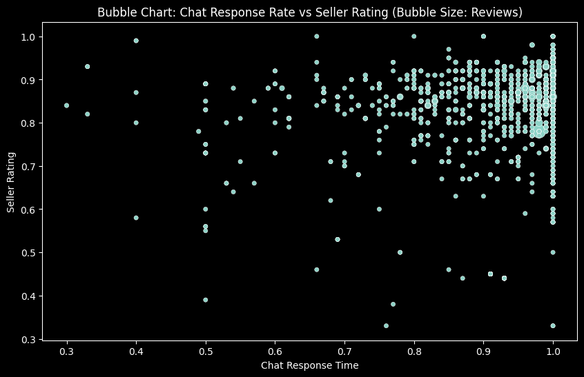
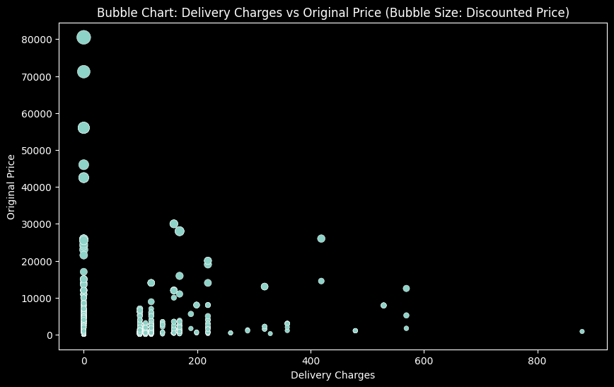
… and some joint plots
pairs = [
('Original Price', 'Discounted Price'),
('Rating', 'Reviews'),
('Seller Rating', 'Chat Response Rate')
]
# Create joint plots for each pair
for x_var, y_var in pairs:
sns.jointplot(data=data, x=x_var, y=y_var, kind='scatter', marginal_kws=dict(bins=25, fill=False))
plt.suptitle(f'Joint Plot of {x_var} vs {y_var}', y=1.02)
plt.show()
additional_pairs = [
('Delivery Charges', 'Original Price'),
('Chat Response Rate', 'Reviews'),
('Rating', 'Seller Rating'),
('Warranty', 'Original Price'),
('Answered Questions', 'Reviews')
]
# Create joint plots for each additional pair
for x_var, y_var in additional_pairs:
sns.jointplot(data=data, x=x_var, y=y_var, kind='scatter', marginal_kws=dict(bins=25, fill=False))
plt.suptitle(f'Joint Plot of {x_var} vs {y_var}', y=1.02)
plt.show()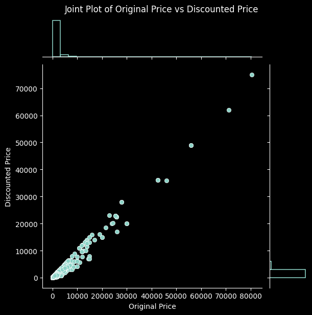
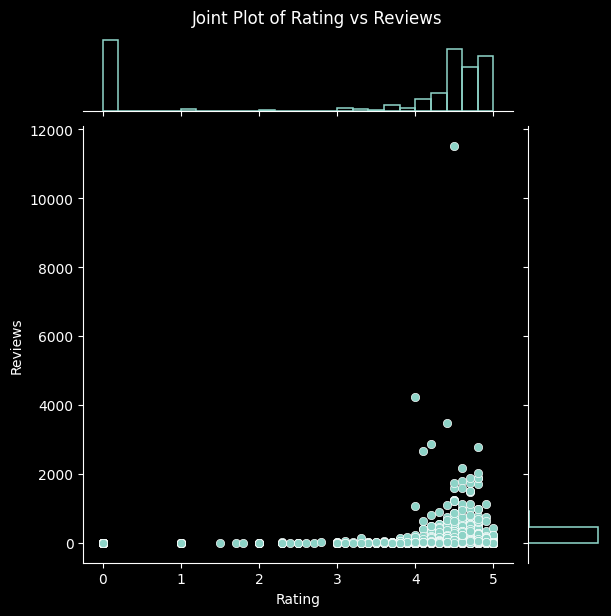
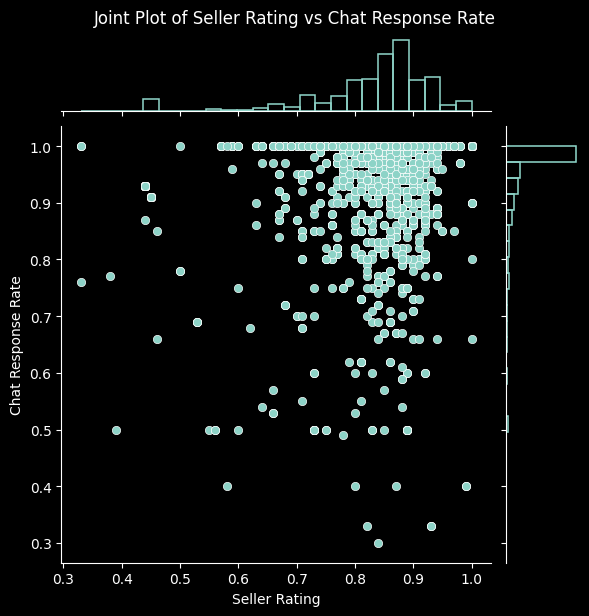
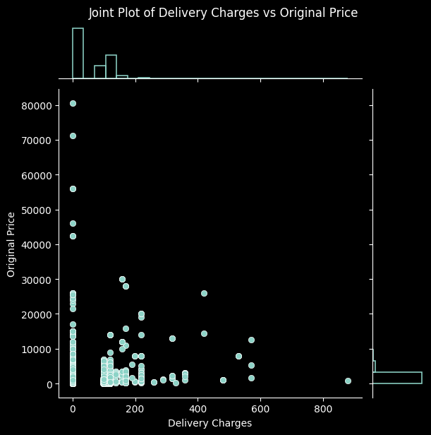
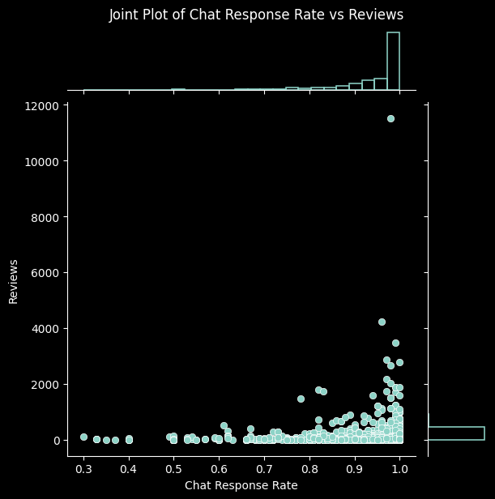
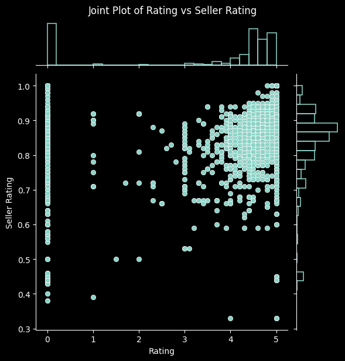
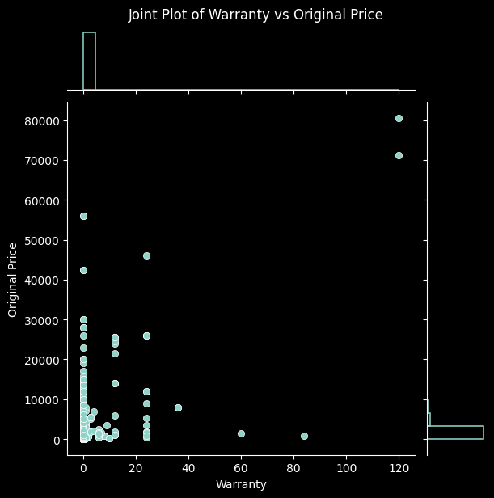
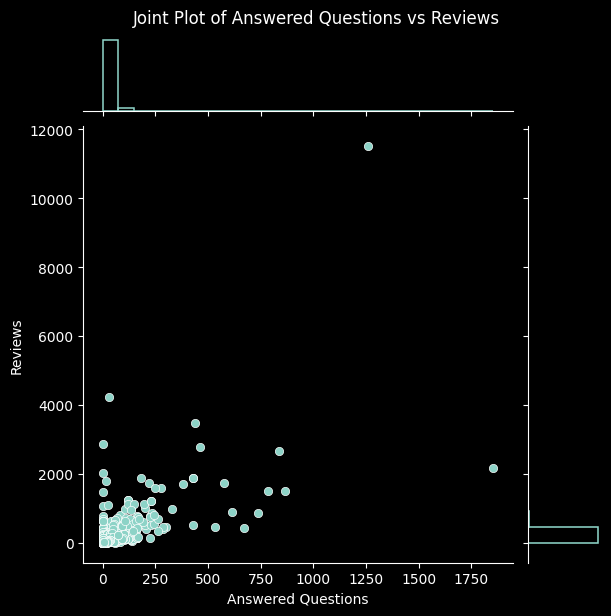
Again, this process has led us to better understand the relationships among the columns in our dataset, along with verifying that they make sense. This gives us further reassurance that the data has been collected and processed correctly. With it thoroughly processed and analysed, we move on to our next steps.
After a thorough exploration of the data, we have decided to revisit our research questions and revise them to reflect our deeper understanding of the data. We have come up with 2 research questions that seek to answer the general question of ‘what differentiates products that perform from products that don’t’.
Formally, these are our finalised research questions:
We will use machine learning and statistical analysis to answer these questions, and hopefully report on novel findings that fill in the gaps in our collective knowledge about what determines a well performing product on e-commerce marketplaces like Daraz.